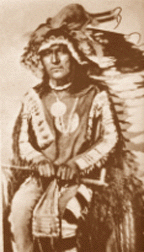
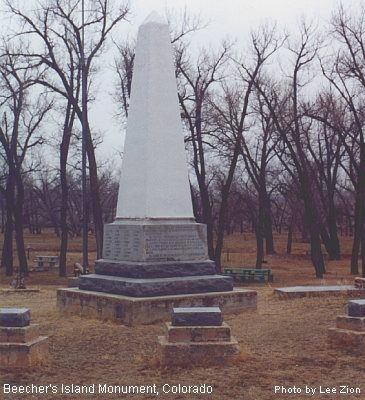
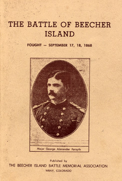

|
September 17, 1868 had been a bloody year on the American
Frontier. Everywhere on the great plains the Sioux and Cheyenne war
parties were intent on ransacking the villages, settlements, and individual
ranches. They had also been destroying telegraph wires and attacking
wagon trains which led to the Battle of Beecher Island.
|
For months the Indians had been murdering settlers
and the travelers in Western Kansas and Nebraska. Many Soldiers had
been sent to attack but always had arrived after the Indians left. The
Indians hit and run strategies, superb horsemanship, and ability to vanish
quickly off into the wide-open spaces of the plains made them very difficult
to fight. They were very different than the Confederates they had been
used to fighting.
|
| Lieutenant George A. Forsyth had rounded up fifty skilled
scouts and frontiersmen. Before they had started their march out of
Fort Wallace, Kansas. Each man had been lightly equipped and hand carried
Spencer repeating Rifles with 140 rounds of ammunition and a Colt Army Revolver
with 30 rounds of ammunition. After Forsyth had got his group of fifty men
formed they started their march. |
The Whites had found a trail as soon as they had started
their expedition leading up to the Republican River. When they got there they
had found many other worn down trails made by Indians and horses with hundreds
of campfires where Indians had stopped to camp overnight.
|
On the evening of September 16, 1868. The Indians signs
where very fresh and Forsyth decided to go into camp early and let his men
good a good rest so they would b ready to strike at the Indians the very
next day. Forsyth decided to go into camp early and let his men got
a good rest so they would be ready to strike at the Indians the very next
day. Forsyth had posted a few men out on lookout to prevent surprises.
|
Early in the morning the Whites had gotten up and started
saddling up all the horses, and cleaning and loading all the guns when down
came about ten Indians screaming and yelling Indian chants in an attempt
to startle the Whites horses so that they would be out on the plains by themselves
and it would be easier to attack for the Indians. But when the Indians had
gotten there they got a surprise. They found all the frontiersmen with their
rifles loaded and ready to go. The Indians had then quickly ran back
out of the scouts bullet range.
|
Later on during the day Grover, one of the scouts had
shouted, “look at the Indians!” the hills on both sides had been covered by
hundreds of Indians. None of the scouts had ever seen so many Indians.
Forsyth had seen a small sandbar just a little ways away in the middle of
the river, it was the only cover they had anywhere in the valley. At
Forsyth’s word all the scouts made a frantic escape under the hail of bullets
and arrows to the small island. All the men tied their horses to a willow
bush and started digging rifle pits with whatever they could find, some men
even killed their horses for cover. This had been a huge move to the
Indians. They had expected to devour the whites in a snap.
|
The accuracy of the Indians was outstanding.
Lieutenant Forsyth had his leg broken by an Indian bullet and the second man
in command lieutenant Fredrick H. Beecher, the nephew of Henry Ward Beecher.
Was killed in action. Forsyth had dug the bullet out of his leg and wrapped
it up himself.
|
Forsyth had told all his men “be steady and make every
shot count.” The battle had later become calmer with the cover of dead horses
and thrown up sand.
|
Every time an Indian had come out from hiding a bullet
had come chasing after him. The Indians got so depressed that they had
retreated for a while which gave the whites enough time to care for the wounded
and dig up more sand for rifle pits.
|
At about noon that day there was another great gathering
of Indians up on the hills above. Riders came in from every direction. Among
them was a very recognizable warrior, Roman Nose, the tallest of the group.
Standing over six feet tall he was one of the tallest men on the plains and
he was also one of the greatest chiefs ever. The whites could easily tell
now that there was a big plan underway. The group had broken up and
the plan had appeared. Roman Nose had led a body of young men out onto the
valley, others joined in also. They had drawn a line facing the island with
roman nose at the head. The plan was now clear.
|

Roman Nose
|
The chosen body of two or three hundred was to charge
straight at the island, while the rest of the warriors were going to creep
up through the grass and fire as fast as possible at the scouts in their sand
pits to distract their attention. When Roman Nose gave his word him and his
horsemen charged straight at the island. Forsyth ordered his men not to shoot
until they had reached the rivers edge.
|
The whites had been armed whit a new gun, the Spencer
Seven Shooter Carbine. The Indians knew what a one shot rifle was but they
had never heard of or seen a gun that could shoot seven bullets without reloading
each time.
|
On came the line of Indians, yelling and whipping their
horses. Just at the rivers edge the rifles from the scouts jumped up out
of the sand its and started firing at Forsyth’s word, and groups of riders
fell. On came another charge and more Indians fell. With a good aim and terrible
effect Roman Nose was shot dead and the Indian line broke and scattered. They
had now stopped the charges. Starvation was there plan now. The Indians had
stopped the pack meals with all their belongings on it too. The scouts only
had river water and horse meat to eat and drink now. The whites had made
a couple attempts to sneak to a railroad line hundreds of miles away to give
word for help. One attempt failed because the Indians were too watchful but
a later was successful and they had gotten two men past the Indians. The
people on the island did not know if the men had made it or not. They only
had the river water and horse rotten horse meat for days. The disgusting smell
of the dead roamed the air with bugs everywhere all over the dead while the
Indians where up on the hill looking for runaways.
|
There were many chances the Indians had to attack but
they already had lost enough, they just decided to starve them to death.
|
It was around noon of September 25, and along came
a dark patch far off in the hills that began to get bigger and bigger as it
came closer in sight. As it came in sight, they noticed it was a few
wagon ambulances and a large column of Calvary men, Indians became scared
and fled the area and the whites were finally rescued, the starving and wounded
had been taken care of, the battle was now over.
|
Many of Forsyth’s men had been killed including the
man who the island was named after, lieutenant Fredrick H. Beecher. Forsyth
had been wounded himself also. General Custer had said that this was the greatest
battle ever fought between the whites and the plains Indians. The Indians
had lost nearly 100 men, including the great chief Roman Nose.
|
|


Becher Island Monument
|